The conference was held at the magnificent Burke Mountain Hotel & Conference Center in East Burke Vermont.
Saturday Field Trips
Alas, due to the snowstorm that ended just before the conference, all field trips were canceled.
Most of the field trips will be rescheduled for later this spring.
Putney VT, Art & Cindy Camp, canceled due to snow
Bolton VT, Mike Luoma, canceled due to snow
Reading VT, Josh Smart, canceled due to snow
Franconia NH, Devon Toland, canceled due to snow
Woodbury VT, Stephanie Raymond, canceled due to snow
Sharon VT, Brad Benjamin, canceled due to snow
However, the Monday "field trip", observing the eclipse, enjoyed spectacular weather.
Presentations
Saturday Evening
Land Acknowledgement, Anne Marie Kittredge
Local Landscapes and Spiritual Connections to Place, Don Stevens, Chief of the Nulhegan Band of the Coosuk, Abenaki Nation
Chapter Reports, NEARA Chapter Coordinators
Sunday Morning
NEARA Annual Membership Meeting, Anne Marie Kittredge, President, and Rob Buchanan, Treasurer
Committee Reports, NEARA Committees
Algonkian Oral Traditions of the Sun and Moon, Evan Pritchard
Evidence of Archaeoastronomy in the Hudson Valley, Glenn Kreisberg
Sunday Afternoon
How to Align with Statistics, Peter Anick
An Analysis of the Alignment of Archaeological Sites, Mark J. Carlotto
A Celtic Early Christian Oratory in New England?, Vance Tiede
The Fusion of Science and Religion: Solar Alignments, Patrick Shekleton
Sunday Evening
Retrograde: A Brief History of Avocational Archaeology, NEARA, and the Roots of Archaeoastronomy in CSL Studies, Kitty O’Riordan
Monday Morning
Stonehenge and Timing Typhon, Vance Tiede
Workshop: Astro-Archaeology Field Survey Apps, Matthew Bruns
Workshop: Solar Eclipse Observation & Photography, Vance Tiede
Monday Afternoon
Live Coverage of the Total Solar Eclipse, NASA
Totality was from 3:28 - 3:30
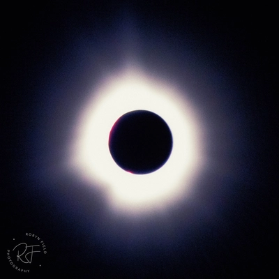
2024-04-08, East Burke VT, by Robyn Field
Photos and Videos
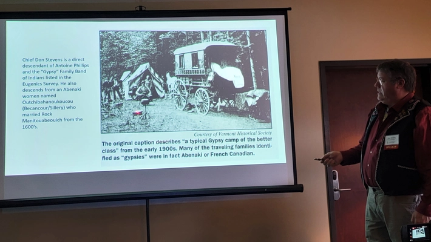
Don Stevens's talk, by Walter van Roggen
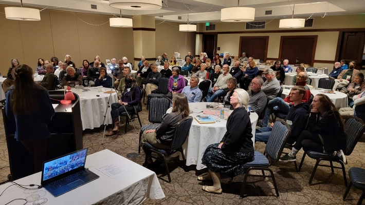
Kitty O'Riordan's keynote talk, by Walter van Roggen
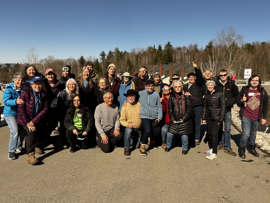
Getting ready for the big event, by Betsy Brewster
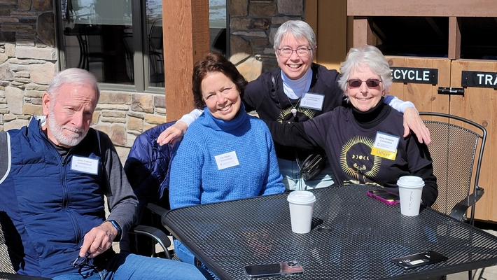
by Walter van Roggen
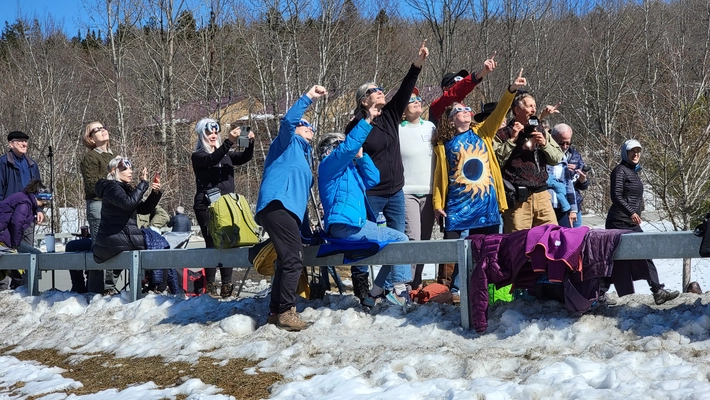
by Walter van Roggen
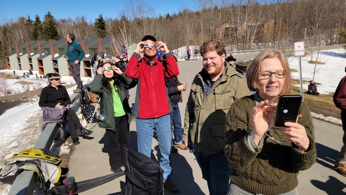
by Walter van Roggen
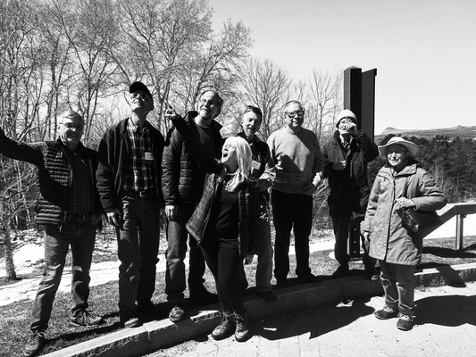
by Robyn Field
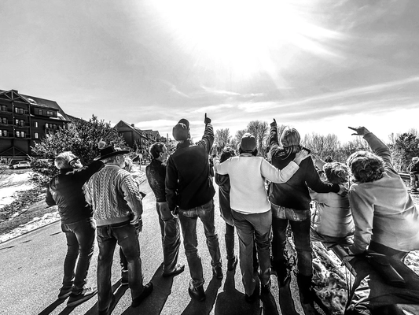
by Robyn Field
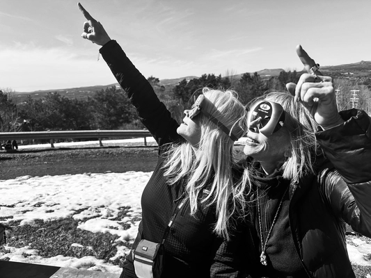
by Robyn Field
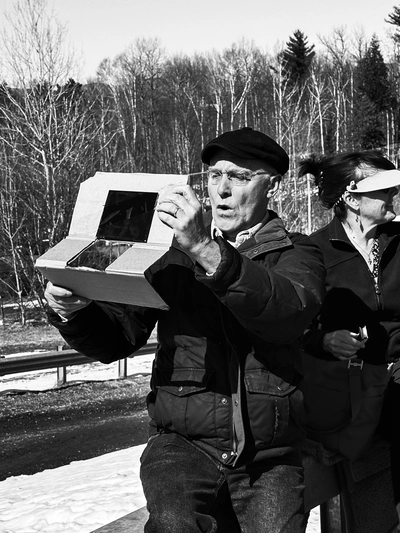
by Robyn Field
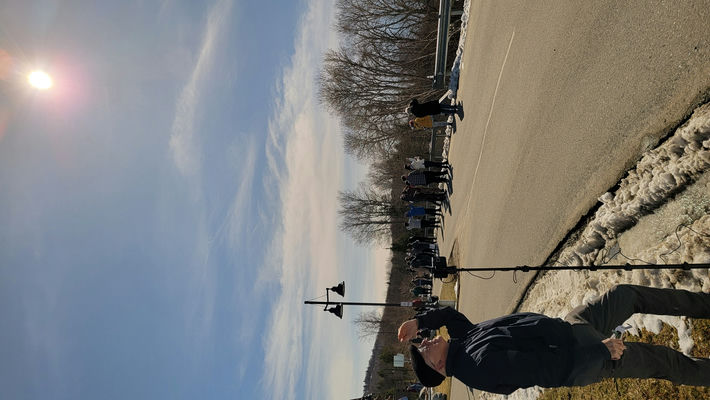
by Walter van Roggen
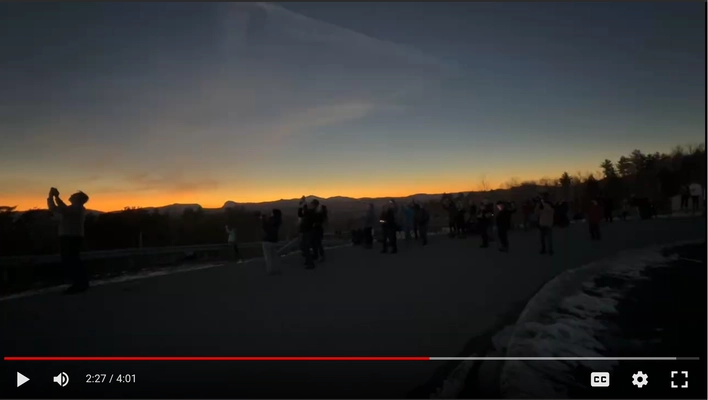
Watching the watchers, by Matt Bruns
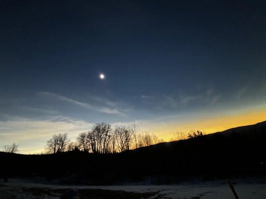
by Betsy Brewster
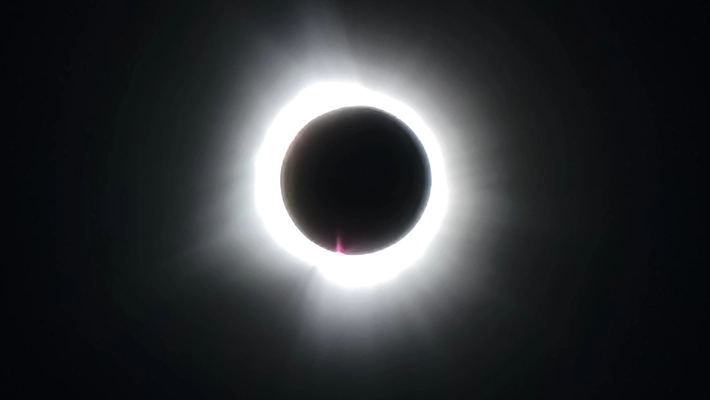
Taken on a smartphone without any special equipment or software, by Walter van Roggen
If you have some good photos or videos that you want to share, please send them to us.